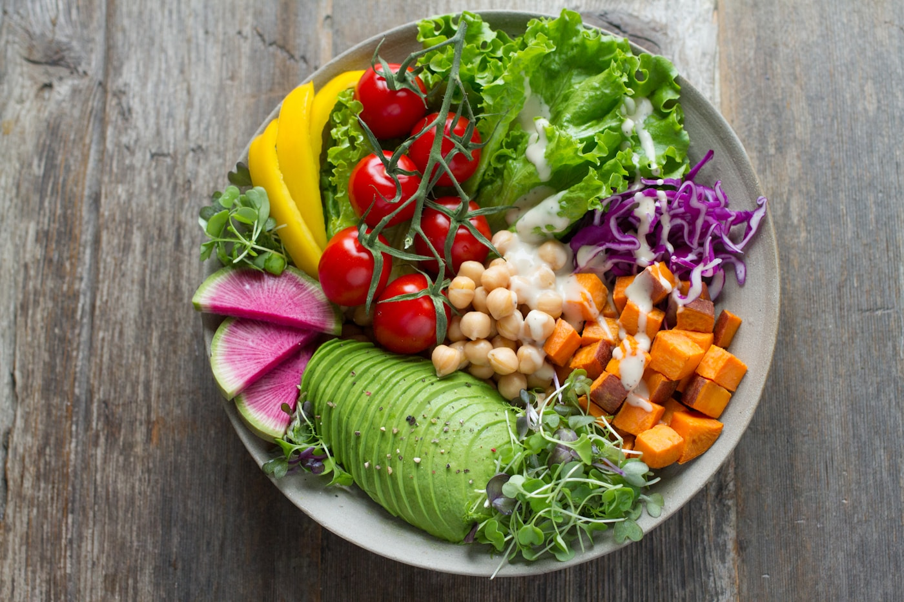
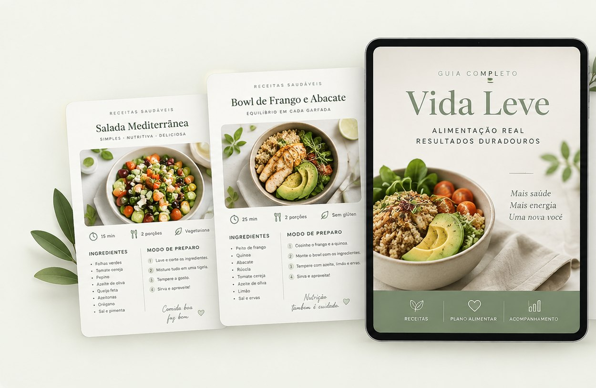

Dias 1–7 · Organizar
Você mapeia onde a sua semana trava e prepara o básico: o que comprar, o que deixar pronto e qual refeição planejar primeiro.
Se a sua semana começa organizada na segunda e termina no aplicativo de delivery na quarta, o problema não é força de vontade. É que você decide cada refeição na hora, com fome e cansado.
O Projeto 21 Dias Mais Leve tira essa decisão do improviso. Ebook, 21 dias guiados, cerca de 50 receitas e as ferramentas para planejar a semana — inclusive os dias em que nada sai como o previsto.
Quero começar por R$ 24,90 ↗Acesso imediato após o pagamento · Pagamento único · 7 dias para desistir
Conteúdo educacional sobre organização alimentar. Não substitui acompanhamento profissional. Resultados variam entre pessoas.

Você já sabe que precisa comer melhor. Já tentou. Já salvou receita, já fez lista, já começou numa segunda-feira.
Aí a reunião atrasa, o mercado não aconteceu, a geladeira tem arroz e um tomate — e a decisão volta a ser tomada às oito da noite, com fome.
O que falha não é o conhecimento. É o sistema: compras, plano de refeições, alternativa para o dia corrido e um jeito de voltar depois do fim de semana.
Um plano que só funciona na semana perfeita não é um plano.
Você abre o material, faz a ação do dia e segue a sua vida. Sem contar caloria, sem lista de proibições e sem precisar de uma semana perfeita para continuar.
Você mapeia onde a sua semana trava e prepara o básico: o que comprar, o que deixar pronto e qual refeição planejar primeiro.
Você monta refeições com o método visual do prato, testa receitas e cria os seus planos B para os dias corridos.
Você define o que consegue manter, prepara as situações fora da rotina e sai com um plano de 30 dias pronto.

O mapa inteiro: como o processo funciona, montagem de refeições, organização da rotina, vida real e continuidade depois do dia 21.
Cada dia com foco, missão, ação prática, checklist e uma pergunta de reflexão. Você não precisa decidir por onde começar.
Cafés da manhã, almoços, jantares, lanches e doces com ingredientes de mercado brasileiro — mais o método visual de montagem e as tabelas de substituição para quando faltar ingrediente.
Guia de preparo de 60 a 90 minutos, lista de compras, planejador de refeições e checklist semanal. A parte chata já resolvida.
Restaurante, churrasco, aniversário, viagem, delivery e fim de semana — mais o protocolo de retomada para quando você sair da rotina.
Diário alimentar, escala de fome e saciedade, rastreadores de água, sono e movimento, avaliações inicial e final e o plano dos 30 dias seguintes.
Foco do dia: identificar o momento em que você improvisa.
Missão: escolher uma refeição da sua rotina que merece ser decidida antes.
Ação prática: anote onde você costuma estar nesse horário, o que tem disponível e o que dificulta a escolha. Defina uma opção possível para a próxima vez e confira se falta algum ingrediente.
Checklist:Reflexão: o que eu poderia deixar decidido antes de chegar nesse horário?
Foco do dia: ter uma alternativa pronta antes de precisar dela.
Missão: escolher duas opções para quando o preparo planejado não couber no dia.
Ação prática: use as receitas e as tabelas de substituição. Defina uma opção que você monta em casa em poucos minutos e outra que encontra onde costuma comer fora.
Reflexão: qual dessas alternativas continua possível quando o meu dia atrasa?
R$ 24,90
Pagamento único. Sem assinatura e sem renovação.
Acesso imediato após a confirmação do pagamento. Conteúdo educacional, sem acompanhamento individualizado. Resultados variam entre pessoas.
Você entra, abre tudo, lê o ebook e testa as receitas. Se não for para você, pede o reembolso em até 7 dias e recebe o valor integral de volta — sem justificar e sem provar nada.
Direito de arrependimento previsto no artigo 49 do Código de Defesa do Consumidor. Solicitação pelo e-mail de contato informado no seu comprovante de compra.
O material foi feito para isso: tem refeições rápidas, preparo semanal concentrado e orientação para os dias em que você come fora ou pede delivery. Algum tempo de organização continua sendo necessário — bem menos, porém, do que decidir tudo na hora, todo dia.
As receitas usam ingredientes comuns e trazem substituições. Você começa pelos preparos mais simples e repete até virar automático, antes de ampliar o repertório.
Normalmente o que falha é o plano exigir uma semana perfeita. Aqui existe um protocolo de retomada justamente para quando a semana sai do previsto: você não recomeça do zero, você retoma do ponto em que parou.
A entrega é digital e imediata após a confirmação do pagamento, por e-mail. Você recebe os arquivos para usar no celular, no computador ou impressos. Não há envio de produto físico.
Não. Ele entrega educação e ferramentas de organização alimentar. Não há promessa de peso, medidas ou resultado em prazo determinado, e os resultados variam entre pessoas.
As ferramentas de organização servem para qualquer padrão alimentar e há substituições disponíveis. Mas o material não é um plano individualizado: confira os ingredientes e valide as adaptações necessárias com um profissional.
Converse antes com um profissional de saúde. O programa não avalia a sua condição e não substitui orientação individual.
Entre em contato pelo e-mail informado no seu comprovante de compra, dentro de 7 dias, informando os dados da compra. A devolução é integral, sem multa.
Você pode abrir o delivery de novo e resolver o jantar de hoje. Ou gastar valor parecido uma única vez e resolver o método pelos próximos 21 dias.
Quero começar agora ↗Acesso imediato por R$ 24,90 · Pagamento único · 7 dias para desistir